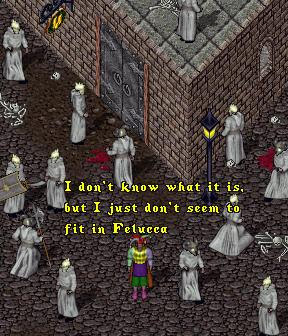
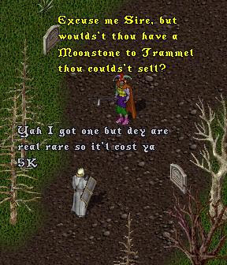
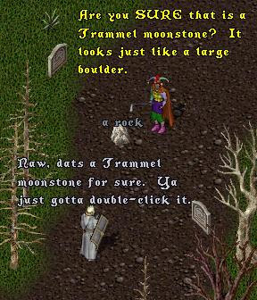
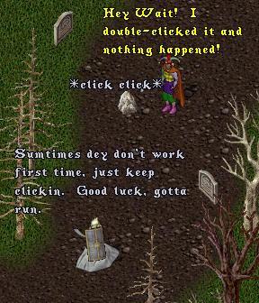
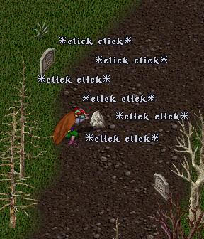
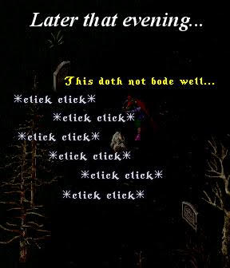
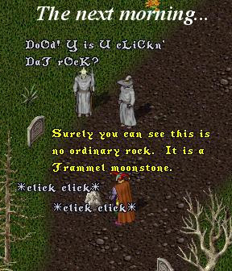
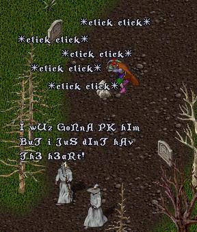

Episode 110: Oh Lord, Stuck in Felucca - Last week ImaNewbie found himself in the facet of Felucca, the PvP (read PK) shard. As this episode opens, ImaNewbie is outside the bank in Felucca pondering the uneasy feelings that this place seems to be giving him.

The obvious solution would be for ImaNewbie
to find a Trammel moonstone, right?





Well, there is one thing you have
to admit about ImaNewbie, he
doesn't give up easily.

